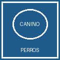
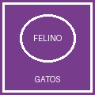

Bienvenida al Portal de Gestión del Refugio
Bienvenido al prototipo estructural del Sistema de Control de Rescate y Adopción Animal. Esta plataforma centraliza la recepción de reportes ciudadanos en situación de emergencia, la asignación automatizada de médicos veterinarios y voluntarios de campo, y el seguimiento riguroso de los expedientes clínicos según la especie.
Si usted ha identificado un animal doméstico en estado de vulnerabilidad o un ejemplar de fauna silvestre en riesgo, utilice la sección Reportar Caso de Rescate para activar de inmediato nuestro protocolo de respuesta.
Protocolos de Atención Especializada por Categoría
El sistema instancia automáticamente el protocolo clínico y legal correspondiente a cada categoría animal registrada:
1. Categoría: Perros (Caninos Domésticos)

Protocolo Médico Aplicado: Evaluación física general, desparasitación interna y externa, esquema de vacunación séxtuple, vacuna antirrábica y esterilización quirúrgica obligatoria.
Condición de Adopción: Apto para adopción doméstica tras completar el alta clínica veterinaria.
2. Categoría: Gatos (Felinos Domésticos)

Protocolo Médico Aplicado: Descarte serológico de Leucemia Viral Felina (ViLeF) e Inmunodeficiencia Felina (VIF), vacuna triple felina, desparasitación y esterilización.
Condición de Adopción: Apto para adopción doméstica responsable con compromiso de tenencia segura.
3. Categoría: Fauna Silvestre
Protocolo Médico y Legal Aplicado: Notificación inmediata al Ministerio del Ambiente, Agua y Transición Ecológica (MAATE), cuarentena etológica sin impronta humana y rehabilitación biológica para reinserción en su hábitat natural.
Condición de Adopción: Adopción doméstica estrictamente bloqueada por normativa ambiental vigente.